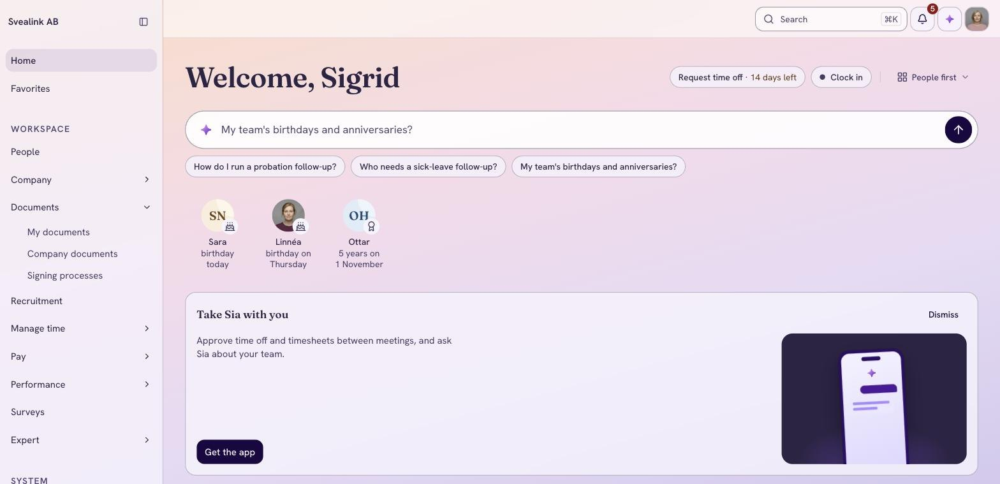
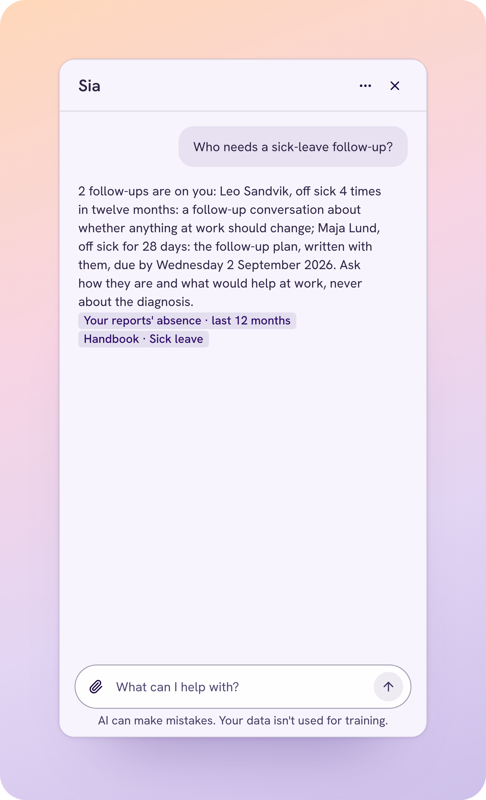
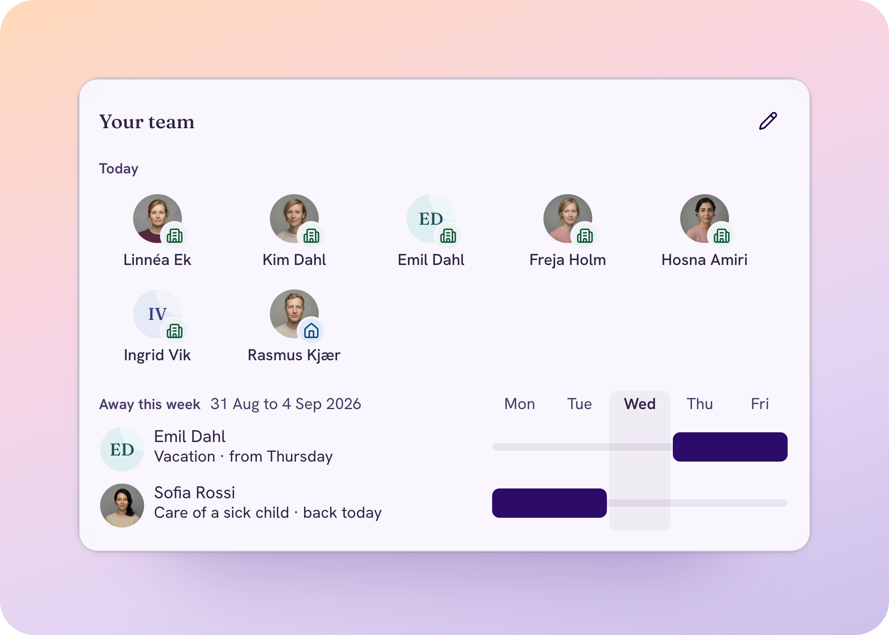

Simployer × Magelungen
Simployer gör HR-jobbet du helst lämnar över.
Se hur jobbet blir gjort.
Arbetet sker ute hos barn, unga och familjer.
Inte vid ett skrivbord. Därför måste HR-jobbet gå att lösa där cheferna faktiskt är.
Chefer på golvet, inte vid skrivbordet
Enhetschefer som är med verksamheten hela dagen. Godkännanden och frågor ska gå att lösa i mobilen, mellan två möten.
Nya kollegor och vikarier, hela året
Varje ny medarbetare behöver avtal, introduktion och rätt behörigheter innan första passet. Inget får falla mellan stolarna.
Sjukfrånvaro som kräver uppföljning
Rehabiliteringen har tidsgränser. Chefen ska veta vem som behöver uppföljning, och när, utan att räkna dagar själv.
Sia löser uppgiften.
HR-experter stöttar dig.
Två kollegor för HR, och rutiner som flyter på av sig själva. HR bestämmer alltid.
Sia, din AI-medarbetare för HR
Gör jobbet och svarar på frågor om reglerna, med källan, där du redan jobbar.
HR-experterna
En HR-expert vid din sida. Någon som har sett fall som ditt.
Inbyggt i Simployer One
Dina rutiner flyter på av sig själva, så att du inte bär processen ensam.
Mindre administration, färre överraskningar.
Avtal, ledighet och onboarding blir klara, där du redan jobbar.
Onboarding som startar när avtalet är signerat, ledighet som godkänns i Teams, ett avtal som skickas för e-signering från en experts mall.
Få svaret, med källan, innan du bestämmer dig.
En fråga om arbetsrätt som besvaras med källan, en HR-expert att gå igenom ett ärende med och som delar beprövade arbetssätt, ett offboardingflöde som påminner rätt personer.
Ha koll på vad som förändras, medan du kan påverka det.
En påminnelse innan en provanställning löper ut, sjukfrånvarotrenden när du frågar Sia, en lönekartläggning och en juridisk uppdatering innan reglerna ändras.
Rutinerna sköter sig själva.
Varje nyanställning, provanställning och avslut hänger på att någon kommer ihåg nästa steg, och jagar rätt person.
Bestäm rutinen en gång, så körs den varje gång. Godkännanden, signeringar och påminnelser når rätt person, så att ingen behöver jaga. Börja från färdiga automationer skapade av HR-experter, eller bygg era egna.
✓Finns i Simployer One i dagRutiner som kan rulla från dag ett.
Ny medarbetare eller vikarie
När avtalet är signerat startar introduktionen. Chef, IT och den nya kollegan får sina uppgifter med datum.
Provanställning
En påminnelse till chefen innan provanställningen löper ut, med vad som ska göras och när.
Avslut
När någon slutar påminns rätt personer om behörigheter, utrustning, intyg och avslutningssamtal.
Magelungens egna rutiner
Rutiner som är unika för hur Magelungen arbetar, utan att vänta på att vi ska bygga dem.
Ett personalregister. Från anställning till avslut.
Registrera en gång. Dina rutiner bygger på det.
Personalregister
Medarbetardata, dokument, processer och rapporter på ett ställe. Varje ändring loggas.
Sia
Svarar medarbetare och chefer med källan, och gör rutinjobbet. Du bekräftar.
Dokument och e-signering
Avtal och tillägg från en HR-experts mall, skickade för e-signering. Ingen utskrift, ingen skanning.
Tid och frånvaro
Ansökningar, godkännanden och saldon. Chefer godkänner i mobilen eller i Teams.
On- och offboarding
Introduktionen startar när avtalet är signerat, och rätt steg körs när någon slutar.
Medarbetarsamtal och kompetenser
Samtal enligt plan. Certifikat registrerade, med påminnelse innan de går ut.
HR-analys
Frånvaro, personalstyrka och avgångar, klart när ledningen frågar.
Automation Studio Inbyggt
Bestäm rutinen en gång. Den körs varje gång.
Visselblåsning
En trygg kanal för att rapportera missförhållanden, med en dokumenterad process.
Allt fungerar i mobilappen, och i Teams och Slack, så att enhetschefer löser uppgifterna där de redan är.
Fyra saker de flesta
HR-system lämnar åt er.
Essential är personalregister och Sia. Complete är allt, med HR-experter bakom er.
HR-experter på telefon
HR, arbetsrätt och lön, på telefon eller skriftligt. En lång sjukskrivning eller en uppsägning: gå igenom den med någon som har sett fall som ditt.
Alltid uppdaterade
Medarbetar-, chefs- och arbetsmiljöhandböcker som uppdateras när lagen ändras. Fråga Sia och få svaret från er egen.
Se vilket team som behöver stöd
Korta, regelbundna pulsmätningar som visar vilken enhet som har förändrats, så att varje chef vet var hen ska börja.
Redo för lönetransparens
Jämför arbetet rättvist, visar vad som ligger bakom varje löneskillnad och samlar resonemanget i en rapport.
Rekrytering ingår i Complete. Learn, med kurser och utbildningar, säljs separat.
Vem behöver uppföljning?
Rehabiliteringen har tidsgränser, och enhetschefen har många medarbetare att hålla koll på samtidigt.
Chefen frågar Sia. Sia visar vem som behöver uppföljning, vad som ska göras och när, med källan från er egen handbok. Chefen bekräftar och tar samtalet.
✓Sia visar alltid källan
Chefen har koll, även ute i verksamheten.
Vem är borta i dag, och vem täcker passet? Svaret ska inte ligga i ett kalkylark på kontoret.
Medarbetare anmäler frånvaro i appen. Chefen ser vem som är borta och godkänner från mobilen eller i Teams. Saldon och lönedata följer med automatiskt.
✓Mobilapp, Teams och Slack
“With Simployer, I spend less time putting out fires and more time with my people.”
Julia Amin · HR, Betao
En HR-ansvarig, åtta chefer och processer i kalkylark. I dag följer alla chefer samma process för onboarding, dokument, medarbetarsamtal och undersökningar.
för en rapport, ner från tre dagar
i veckan tillbaka för Julia
svarsfrekvens, varje undersökning med en handlingsplan
Byggt för HR-data, och för systemen ni redan har.
Sia är alltid märkt som AI och visar källan i varje svar. Sia förbereder jobbet, HR bekräftar och bestämmer.
1,2 miljoner personer sköter sin HR i Simployer
Data lagras i EU
Externt granskad säkerhet
ISO/IEC 27001:2022, certifiering pågår
Färdiga kopplingar till lön, rekrytering, chatt och kalender, plus ett öppet API. Allt ni delar med Sia eller HR-experterna omfattas av ett personuppgiftsbiträdesavtal.
Från avtal till första rutinen live.
En namngiven onboardingspecialist tar er från kick-off till live. Sedan tar er Customer Success Manager över.
Avtal signerat
Vi bokar kick-off direkt.
Kick-off
Omfattning, data och i vilken ordning vi sätter upp det.
Uppsättning
Simployer formas efter hur Magelungen arbetar, med alla enheter.
Data och integrationer
Data flyttas över och lönesystemet kopplas på.
Utbildning
HR först, sedan en kort session för chefer i mobilappen.
Första rutinen live
Därefter fler rutiner i Automation Studio.
Datum efter kick-off sätter vi tillsammans, utifrån hur snabbt data och godkännanden kommer på plats.
Tack, Magelungen.
Christopher Robin Nordmo
Simployer
christopher.nordmo@simployer.com